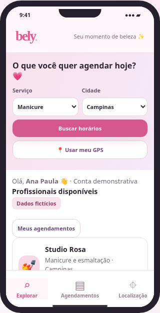

Abertura
Sua beleza,
no seu tempo.
O Bely conecta quem quer agendar um serviço de beleza a quem tem horário para atender.
Abertura
O Bely conecta quem quer agendar um serviço de beleza a quem tem horário para atender.

Problema
Para a cliente, mensagens e espera. Para o salão, tempo na agenda que passa sem virar atendimento.
Preço e horários espalhados entre conversas.
Agendamentos manuais, conflitos e horários vagos.
Demonstração do MVP
Acompanhe a mesma reserva nas telas da cliente e do salão.
Pesquisa de campo
85% de aprovação na pesquisa do projeto.
Medir reservas concluídas e uso recorrente no piloto.
Modelo de negócio
Começamos por Campinas e Limeira, onde queremos validar o uso e a aquisição de salões.
10% por reserva concluída, sem mensalidade.
R$ 100/mês + 5% por reserva concluída, com destaque patrocinado.
Proposta de captação
Meta total de uma rodada coletiva com aportes por etapas.
Colocar o produto em operação, validar pagamentos e iniciar a aquisição de salões.
Aportes condicionados a reservas concluídas, salões ativos, retenção e custo de aquisição.